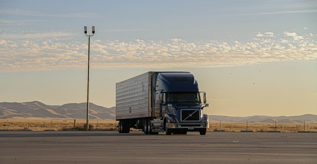

Soluciones Logísticas y Transporte de Cargas
Bienvenido a Transportes Santa Margarita. Nos dedicamos al traslado terrestre de mercancías con total seguridad, puntualidad y cobertura nacional para conectar tu negocio con sus objetivos.
Compromiso en Carretera
Contamos con una flota moderna y un equipo de conductores certificados para garantizar que cada entrega llegue a su destino en perfectas condiciones y tiempos óptimos.
Beneficios de viajar con nosotros
- Monitoreo las 24 horas:Seguimiento satelital en tiempo real para todas nuestras unidades.
- Flota Diversificada:Camiones adaptados para distintos tipos de volumen y tonelaje.
- Seguridad GarantizadaPólizas de seguro de carga activas para su total tranquilidad.
Nuestra Flota en Ruta
